Everything you want to hear
One player for the big catalogues and the corners of the internet where music actually gets discovered.
Made for you
Discover Weekly, three Daily Mixes, Release Radar and Albums for you, built from what you play. Your listening history never leaves your computer.
Reddit radio
About 50 music communities, from r/listentothis to r/synthwave, played in the order their members rank them.
Charts by genre and era
Trending songs and albums, charts for 20+ genres and the hits of every decade from the 50s to today.
Search everywhere
Songs, albums and artists, plus YouTube, Bandcamp, SoundCloud, Mixcloud and the Internet Archive in one search.
Browse like a record shop
Bandcamp by genre or any tag, YouTube's full albums and soundtracks, Mixcloud's DJ mixes, live concerts and 78s.
Real albums and artists
Full track lists, artwork, release dates and complete discographies. Save the albums you love.
Never run out
Turn on random radio and Earshot keeps playing songs like the last ones when your queue ends.
Playlists your way
Make and reorder playlists, heart songs, and import playlists from YouTube, SoundCloud or Mixcloud with a link.
Stays out of the way
A mini player, a now-playing card when a song starts, a tray icon and media keys.
Take a look
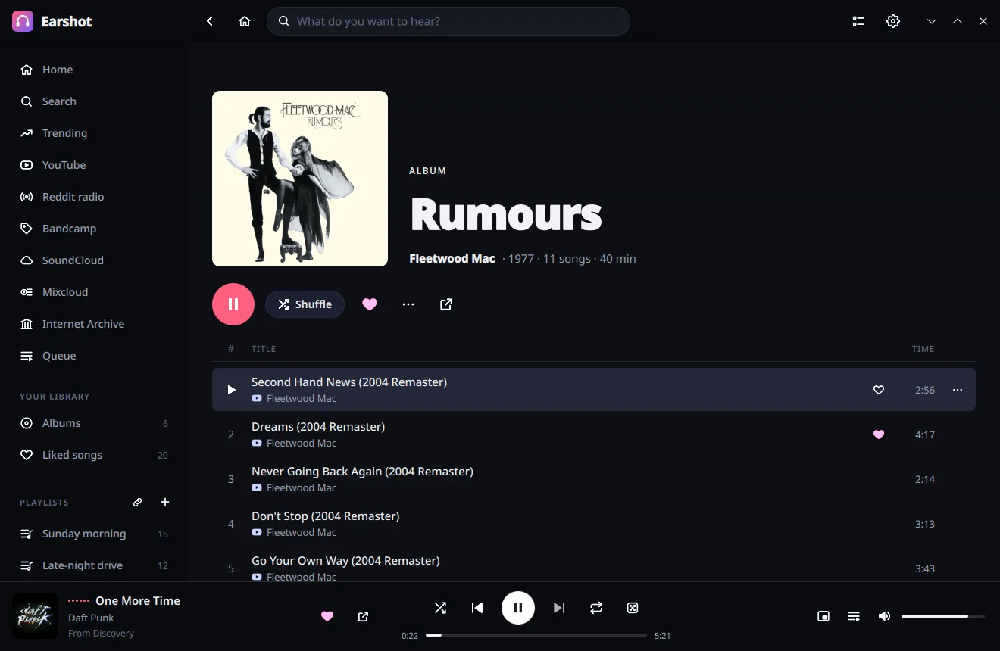
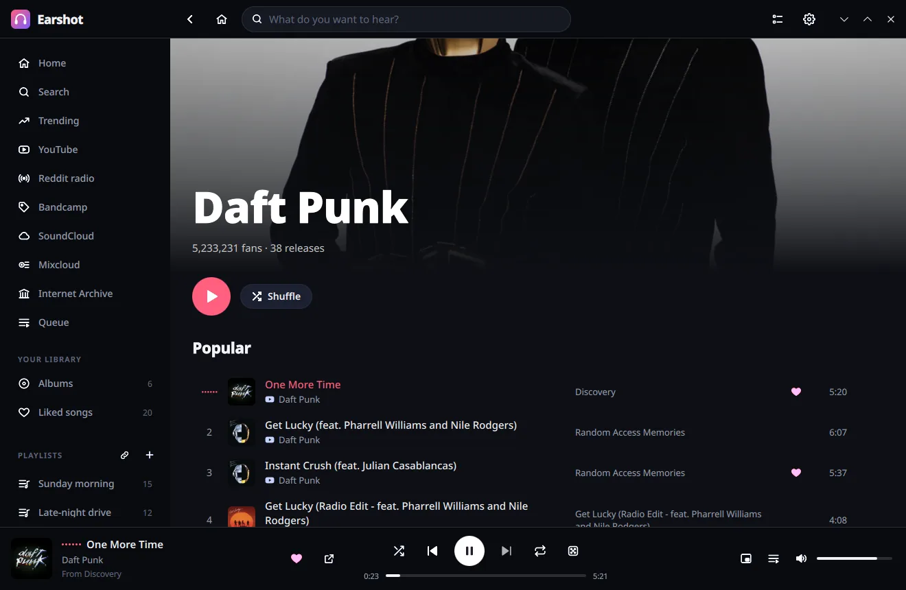
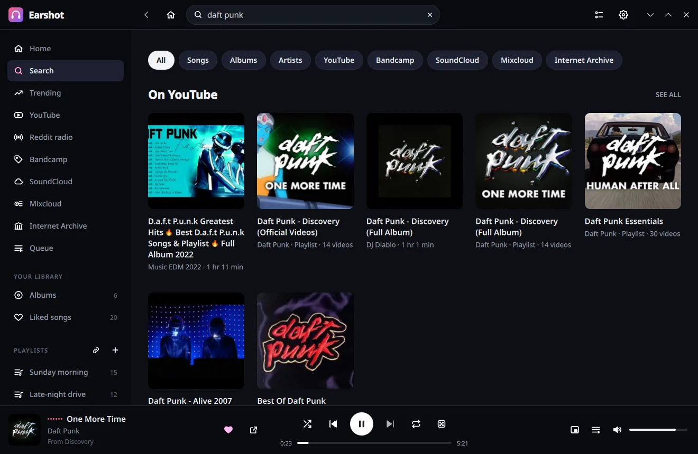
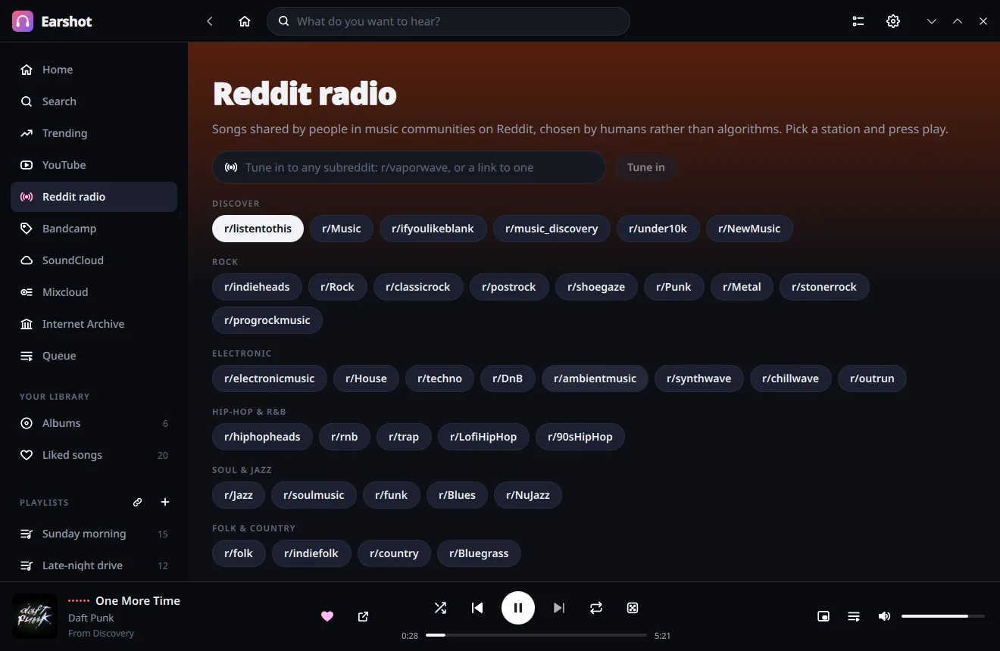
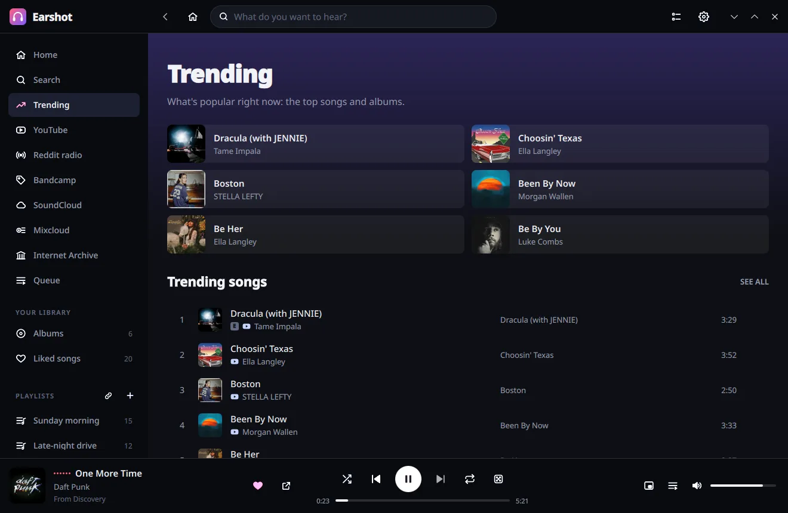
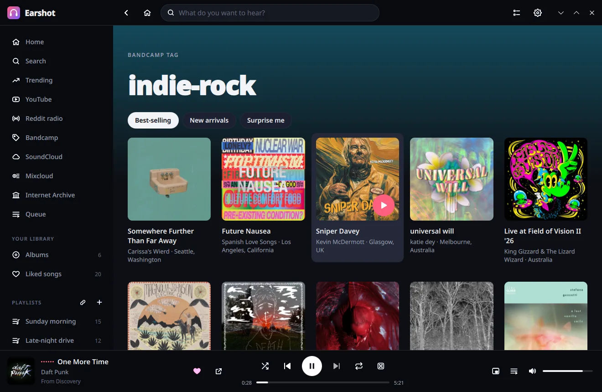
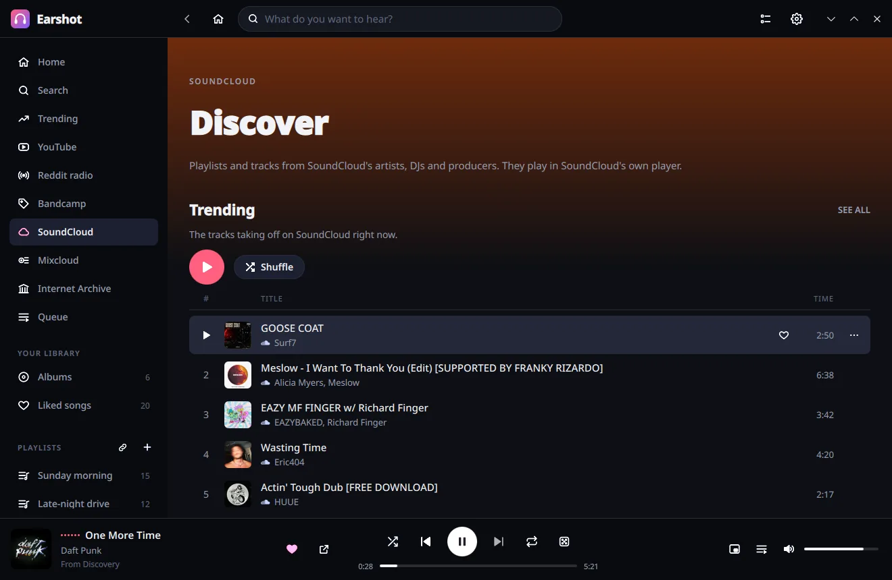
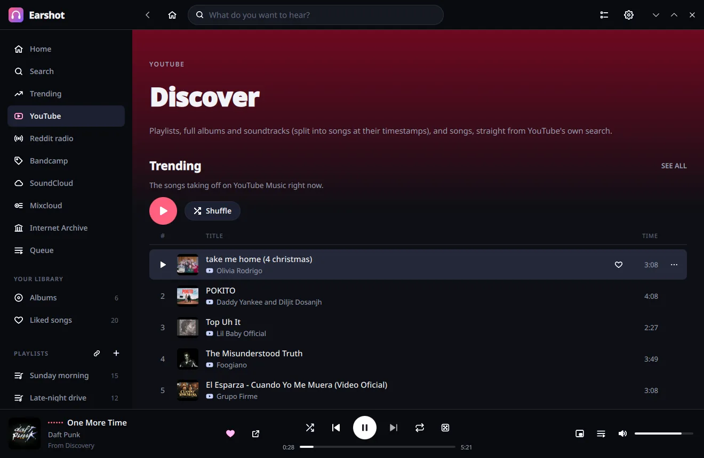
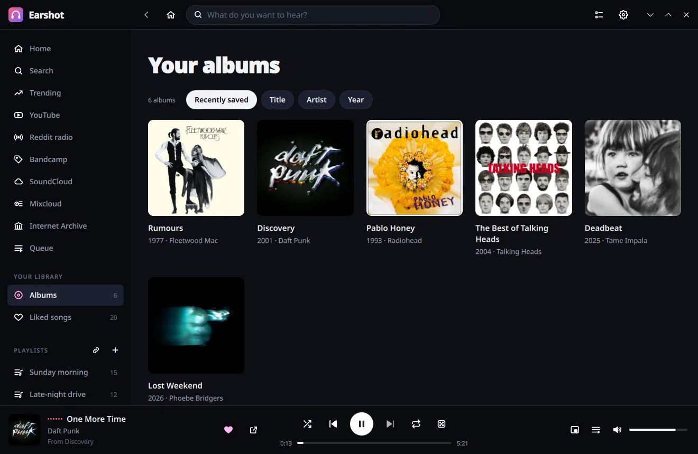
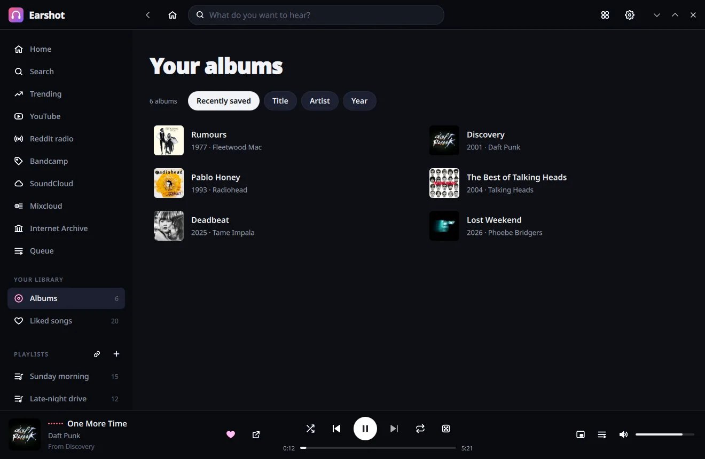
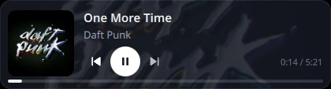
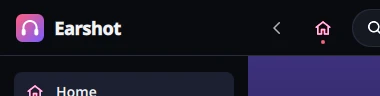
On your phone, too
The web version runs in any browser, on another computer or your phone, and shares your playlists and liked songs with the app. Open it from Earshot's settings, or run it on a home server with Docker.
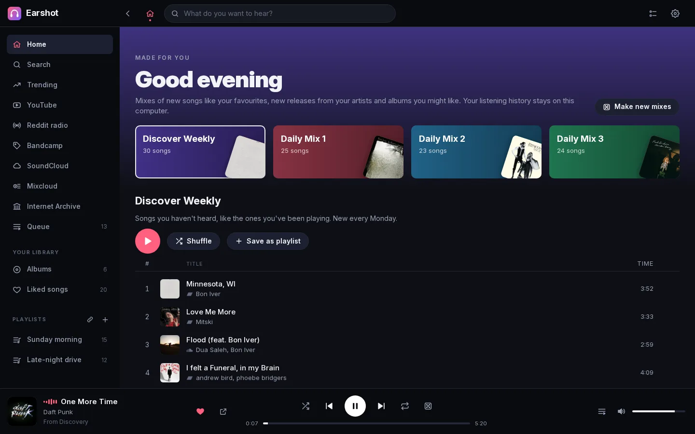
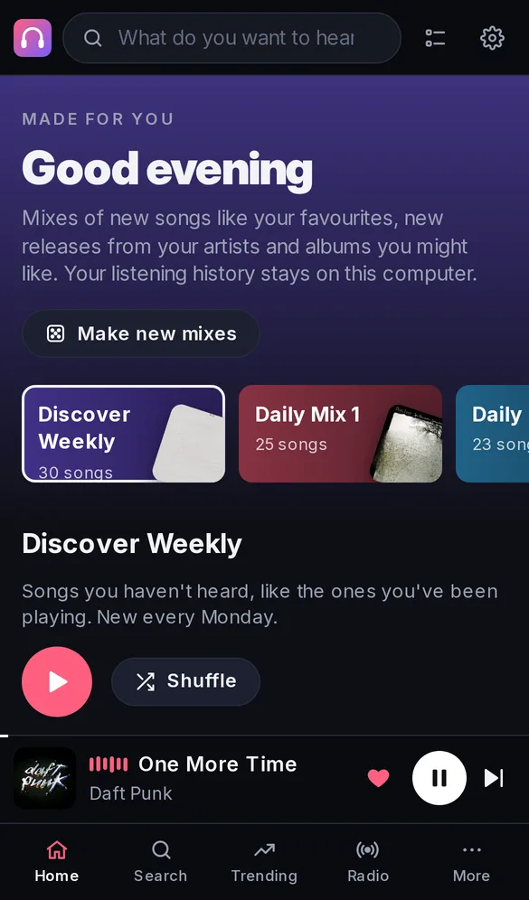
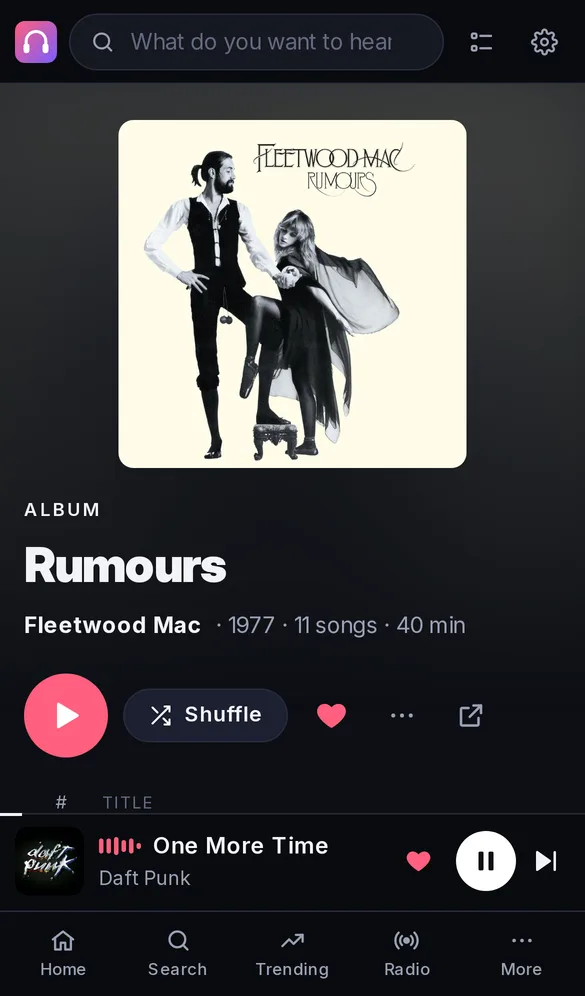
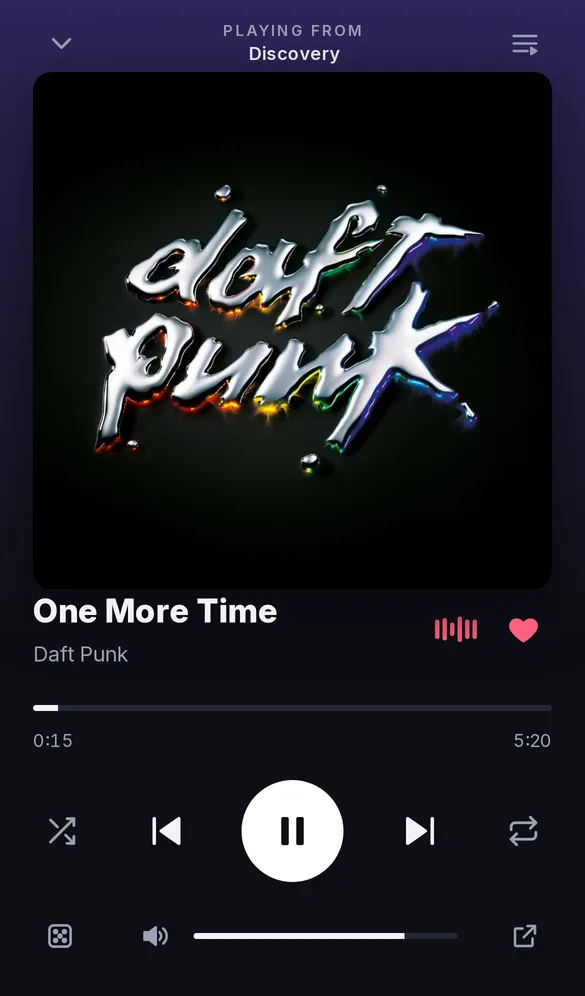
Download
Free for Windows, macOS and Linux. Everything is on the latest release.
Windows
The installer (…-windows-x64-setup.exe), or the portable zip that runs from any folder.
macOS
The disk image for Apple-silicon Macs (macOS 13 or later), or Homebrew:
brew tap benwbooth/earshot https://github.com/benwbooth/earshot
brew install --cask earshotIf macOS says Earshot can't be opened, run xattr -dr com.apple.quarantine /Applications/Earshot.app once.
Linux
A Flatpak (flatpak install --user Earshot-*.flatpak) or an AppImage. On Nix: nix run github:benwbooth/earshot
Web version with Docker
Run it on a home server and open it from any device on your network:
docker run -d -p 8790:8790 -v ~/earshot:/data ghcr.io/benwbooth/earshot:latest